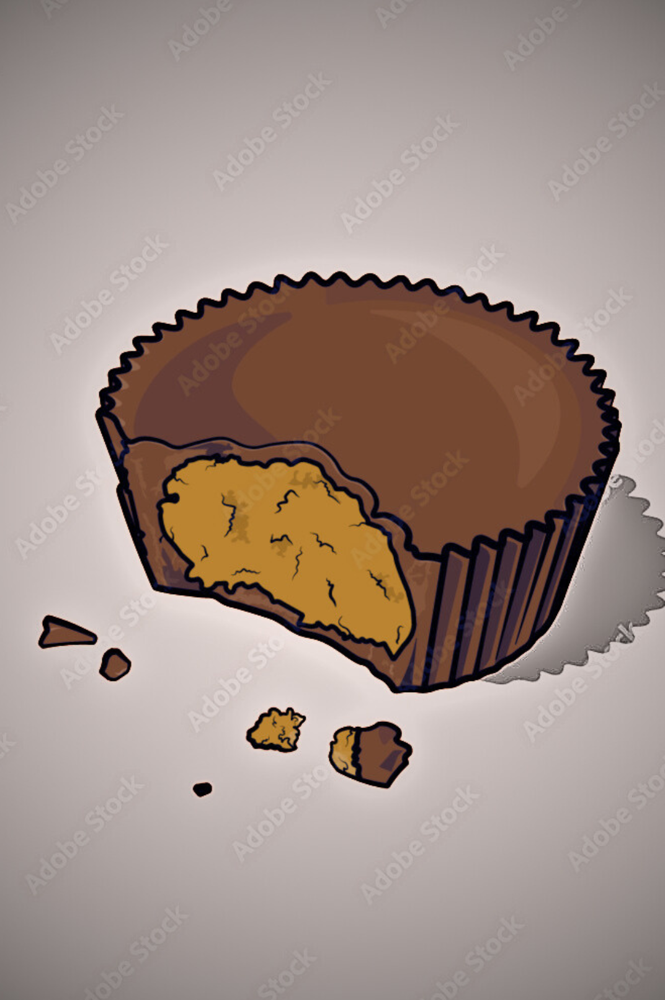

About Reese's Peanut Butter Cups
Reese's Peanut Butter Cups are a classic American candy that has been
enjoyed by generations. They consist of two smooth, creamy peanut
butter cups sandwiched together with a layer of rich, decadent milk
chocolate. The combination of sweet and salty, crunchy and smooth, is
simply irresistible.


Interesting Facts About Reese's Peanut Butter Cups
-
Reese's Peanut Butter Cups are the best-selling candy in the United
States.
-
Over 200 million Reese's Peanut Butter Cups are sold every year.
-
The average American eats about 2.4 pounds of Reese's Peanut Butter
Cups per year.
-
There are over 40 different Reese's products available worldwide.
Nutritional Information of Reese's Peanut Butter Cups
| Nutrient |
Amount |
| Calories |
110 |
| Fat |
7 grams |
| Saturated fat |
3 grams |
| Carbohydrates |
12 grams |
| Sugar |
10 grams |
| Protein |
2 grams |